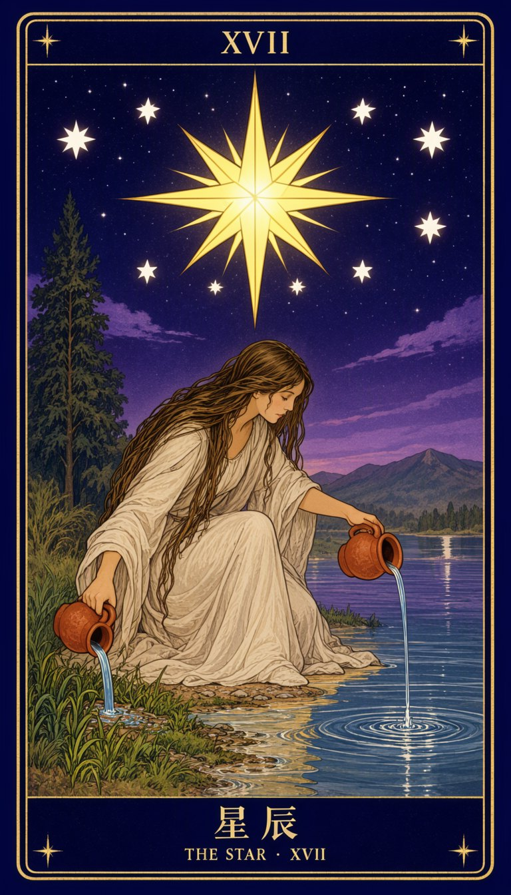

A 单画布排版塔罗牌
tarot外框 + 罗马数字 + 中英牌名，单主体强象征
- 版式骨架
- 外框(双线+角饰) → 顶部罗马数字 → 主画面 → 底部牌名(中/英)
- 文字密度
- 标签级
- 分辨率
- 768 × 1344 · 30 步 · CFG 4.0 · euler
实拍XVII 与 7 颗小星位置准确，金线双框完整
查看完整提示词（519 字）
竖版塔罗牌，2:3 画幅，整张牌面完整展示，四边与画面边缘平行，居中排列，外围留一圈极窄的深靛蓝背景。 牌面为深靛蓝到紫黑的渐变底色，布满细密星点。外框是一圈金色细线双框，线宽均匀，四角各有一枚小型金色四芒星装饰。牌面上下各留出横向窄带。 顶部窄带中央，以金色罗马数字写出： XVII 中央为主画面区域。画面中一位年轻女性单膝跪在湖边浅滩，侧身面向画面右侧，上身以垂落的长发与臂弯自然遮挡，姿态舒展安静。她左手持一只赭红色陶罐，罐口向下，清水呈细长弧线倾入湖面，水面泛起环形涟漪；右手持另一只陶罐，倾斜于岸边的草地，水流入土。 她头顶正上方悬挂一颗巨大的八芒星，星体明亮，放射出八道长短交替的金色光芒。八芒星周围散布七颗较小的白色五角星，大小略有差异，呈弧形排列。 背景左侧是一棵高大的深绿色柏树，树形修长；右侧远处是连绵的低矮山峦，山脚有一座小湖。天空中另有几缕淡紫色云带。 画面底部窄带中央，以金色楷体中文写出牌名： 星辰 中文牌名下方一行，以更小的金色衬线字母写出： THE STAR · XVII 整体采用新艺术运动风格的塔罗牌绘制法，深色底衬托金色线条，色彩克制，构图对称稳定，线条细腻，具有神秘、宁静的仪式感。